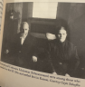
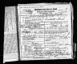
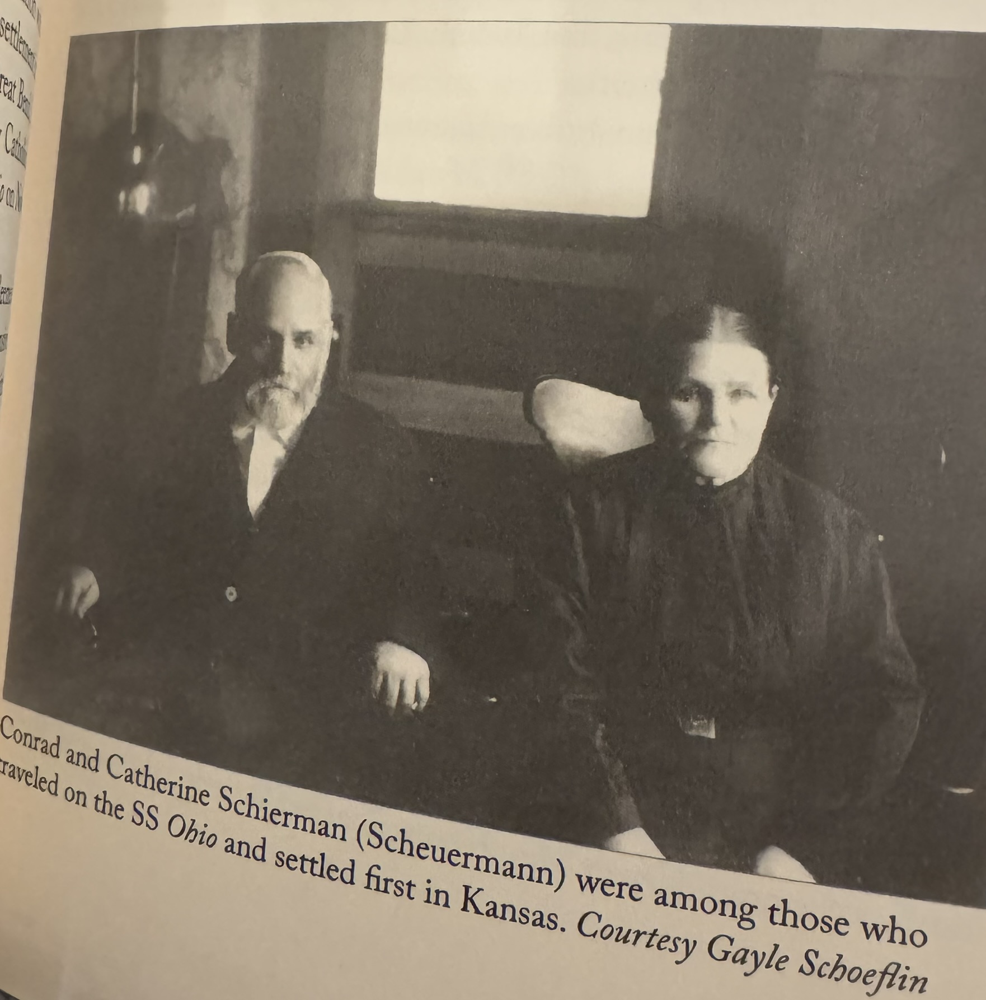
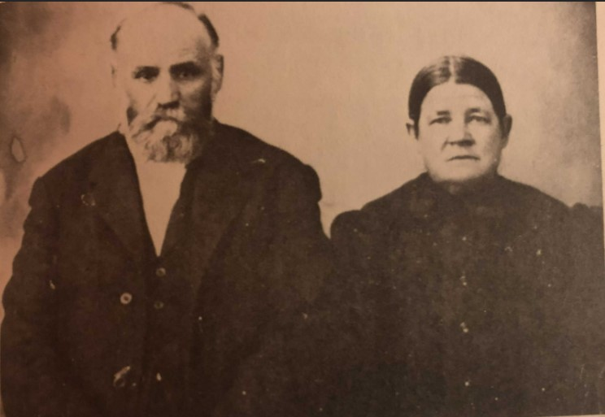
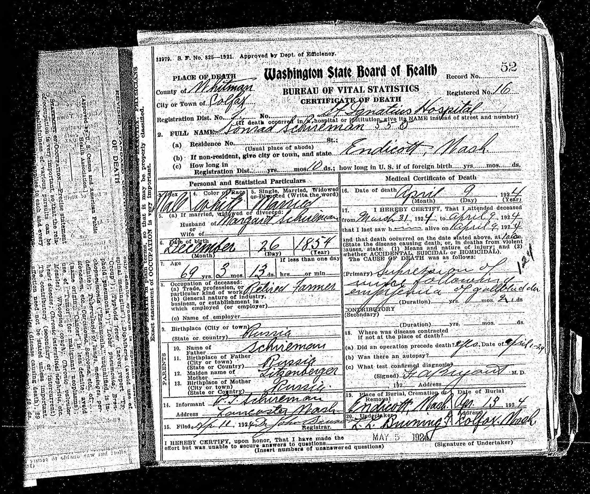

Schierman, Johann Conrad “Dob Conrad”
| Birth Name | Schierman, Johann Conrad “Dob Conrad” |
| Also Known As | Scheuerman |
| Gender | male |
| Age at Death | 69 years, 3 months, 14 days |
Notes
Note
There were rumors in the 1880s that Indians were going to storm Colfax so farmers went in with guns and the excited abated. Mrs. Schierman was once alone and encountered some Indians who seemed threatening. She saw a man riding in the distance on a white horse and said, “Mein Mann, Mein Mann,” like he was her husband, so they rode off. Every spring and summer Indians went north through Endicott to the mountains to hunt. Conrad used to say that sometimes it would take a half-day for them all to pass. A group armed with bows and arrows came into Charley Laird‟s place one time and told them to cook a meal, but the family sneaked up to Conrad‟s and they got their guns. The Indians left but took plates and things down to the river. Another time Mrs. Aschenbrenner cooked biscuits for them. They sometimes camped down by the Lairds and Weitzes on the northwest side of the river.
(Source: The Berry Meadow Archives page 169 from Mr. Dave Schierman, oral history, Walla Walla, Washington, July 9, 1972 (with Richard Scheuerman and Evelyn Reich).)
Events
| Event | Date | Place | Description | Sources |
|---|---|---|---|---|
| Birth | 12/26/1854 | Russia | 1a 2a | |
|
|
||||
| Residence | 1891 | Three story house | 1b | |
|
Note
"We all lived together at first in a three-room house on the river with “Dob Conrad” Schierman who was a bachelor at that time." - Elizabeth (Scheuerman) Repp and Mae (Mary Scheuerman) Geier |
||||
| Death | 4/9/1924 | Colfax, Whitman, Washington, USA | 1a 3 2a | |
|
|
||||
| Burial | 4/13/1924 | Endicott, Whitman, Washington, USA | 2a | |
|
|
||||
| Property | Whitman, Washington, USA | 20 acre parcel north of Endicott Washington | 1c 1d | |
|
Note: 1
When the Germans first came they bought 160 acres and divided it into twenty-acre parcels. They called it the Russian Colony. They would have a big garden spot like they had in Russia. One day he [Conrad] rode to the river by Hargraves and later eight families bought 160 acres, twenty acres apiece, for a little over $1 per acre. The road over the bluff to Endicott was not in yet, so they crossed near the present swinging bridge and went out past Hargaves. [Map shows locations from south to north in the colony of John Schierman, Conrad Schierman, Henry Schierman, George Schierman, John Peter Ochs, Joseph Ochs, John Schreiber, and Phillip Aschenbrenner‟s father.] Many later immigrants lived in the Aschenbrenner house until they found a place to settle. They all helped each other get started when new ones came. |
||||
| Occupation | Farmer | 2a | ||
|
|
||||
Parents
| Relation to main person | Name | Birth date | Death date | Relation within this family (if not by birth) |
|---|---|---|---|---|
| Father | Scheuermann, Johannes | 1814 | about 1858 | |
| Mother | Litzenberger, Elizabeth | 1815 | ||
| Schierman, Johann Conrad “Dob Conrad” | 12/26/1854 | 4/9/1924 |
Families
Family of Schierman, Johann Conrad “Dob Conrad” and Holstein, Catherine Elizabeth |
|||||||||||||||||||||||||||||||
| Married | Wife | Holstein, Catherine Elizabeth ( * 1855 + 3/10/1912 ) | |||||||||||||||||||||||||||||
|
|||||||||||||||||||||||||||||||
| Children | |||||||||||||||||||||||||||||||
| Name | Birth Date | Death Date |
|---|---|---|
| Schierman, Sarah | 7/26/1890 | 12/25/1974 |
Media





Family Map
Pedigree
-
Scheuermann, Johannes
-
Litzenberger, Elizabeth
- Schierman, Johann Conrad "Dob Conrad"
-
Litzenberger, Elizabeth
Ancestors
Source References
-
Richard D. Scheuerman: The Berry Meadow Archives
-
- Page: 109 - 113
-
Citation:
Sources: William L. Scheirman Files, Evelyn Reich Files, Ruth DeLuca Files, Ethel Lock-Sarah Bafus Correspondence, Trinity Lutheran and Zion Lutheran Church Records (Endicott, Washington), Igor Plehve Family Charts (in Russian). Compiled by Richard Scheuerman (2009).
-
- Date: 4/1/1971
- Page: 171
-
Citation:
Elizabeth (Scheuerman) Repp and Mae (Mary Scheuerman) Geier, oral history, Endicott, Washington, April 1, 1971 (with Richard Scheuerman).
-
- Date: 11/27/1971
- Page: 168
-
Citation:
Mr. Jack Grove, oral history, Endicott, Washington (Palouse River), November 27, 1971 (with Richard Scheuerman).
-
- Date: 7/9/1972
- Page: 168
-
Citation:
Mr. Dave Schierman, oral history, Walla Walla, Washington, July 9, 1972 (with Richard Scheuerman and Evelyn Reich).
-
- Page: 276
-
Citation:
Among few Protestants on board the November Ohio transport were the following family most locating near Great Bend, George Brach, Peter Ochs, Henry Scheuermann, and two Conrad Scheuermanns. They were soon joined in Kansas by the families of George H. Henry Rothe, and Conrad Aschenbrenner who had arrived in New York on January 6, 1876 on the SS City of Montreal. These families began forming the nucleus from which Russian German immigration to the Pacific Northwest would first undertaken in 1881.
-
- Page: 284
-
Citation:
Shortly after Conrad Schierman arrived in the Palouse, he rode north from Endicott to explore the surrounding countryside. Waves of knee-high tawny bunchgrass blew in the breeze across the broad hills. After riding about five miles, he came to the crest of a massive basaltic bluff overlooking the Palouse River Valley. Finding it too steep to descend, he followed the river's course upstream until he came to a more gentle slope near its northernmost point in that area. Descending here and riding back a short distance to the expanse spied earlier, he found a beautiful meadow bordered on the west by the river and sheltered on the east by the steep rock bluffs. He returned to the railroad camp and shared the news of his discovery with the other families who proceeded to investigate the site together. They were taken by the beauty and fertility of the site, and soon traveled to the federal land office in Colfax to arrange for the purchase of the land. Their request was rather unorthodox since their intention was to collectively purchase a quarter-section adjacent to the river. Officials complied and the property was divided among them reflecting the communal mir model to which they had been accustomed in Russia.
This original “Palouse Colony” consisted of the Peter and Henry Ochs families together with those of Conrad, Henry, George, and John Schierman.
-
-
Washington Death Index
-
- Page: Washington State Archives; Olympia, Washington; Washington Death Index, 1940-2017DescriptionYear Range: I2284680
-
Citation:
Source Citation
Washington State Archives; Olympia, Washington; Washington Death Index, 1940-2017Description
Year Range: I2284680Source Information
Ancestry.com. Washington, U.S., Death Records, 1907-2017 [database on-line]. Provo, UT, USA: Ancestry.com Operations, Inc., 2002.
Original data:Washington State Department of Health. State Death Records Index, 1907-1996. Microfilm. Washington State Archives, Olympia, Washington.
-
- Transcribed by Dixie (Bonnie) - Grand Daughter: Elijah Roger Holm's Diary
-
U.S. and International Marriage Records
-
- Page: Source number: 27.000; Source type: Electronic Database; Number of Pages: 1; Submitter Code: BZ1
-
Citation:
Source Citation
Source number: 27.000; Source type: Electronic Database; Number of Pages: 1; Submitter Code: BZ1Source Information
Yates Publishing. U.S. and International Marriage Records, 1560-1900 [database on-line]. Provo, UT, USA: Ancestry.com Operations Inc, 2004.Original data: This unique collection of records was extracted from a variety of sources including family group sheets and electronic databases. Originally, the information was derived from an array of materials including pedigree charts, family history articles, querie.
-